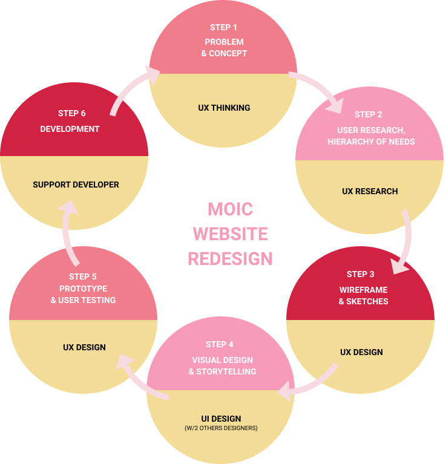
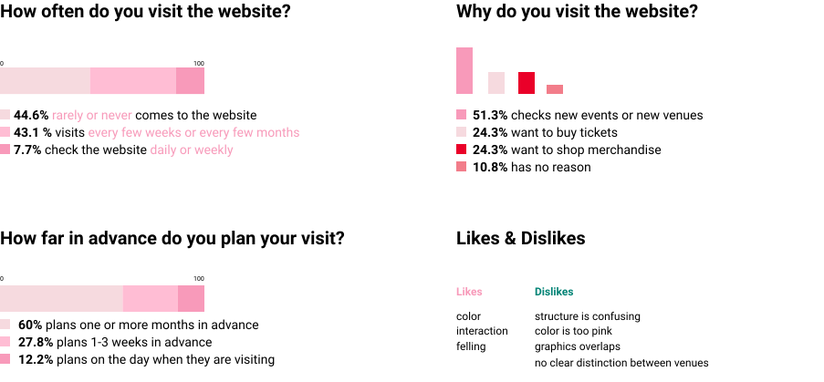
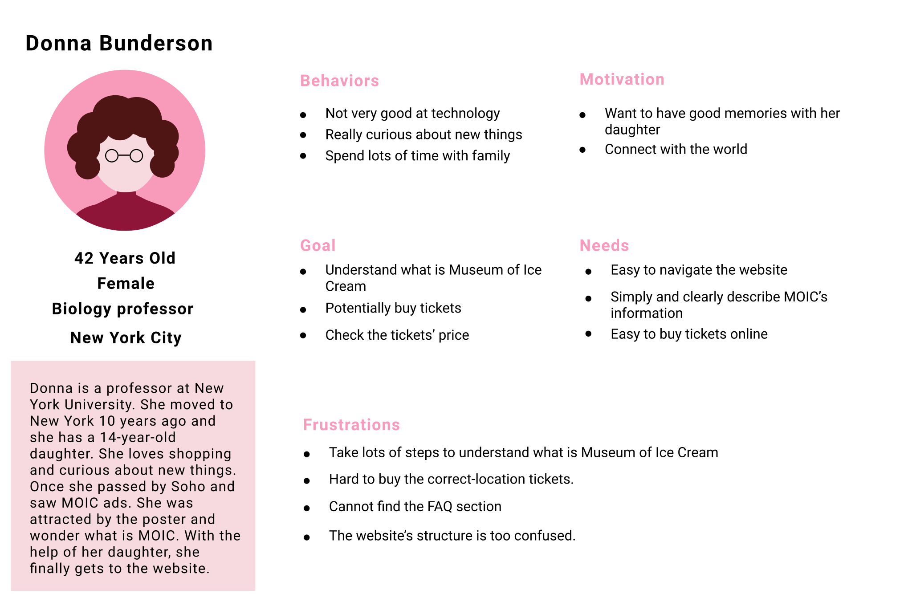
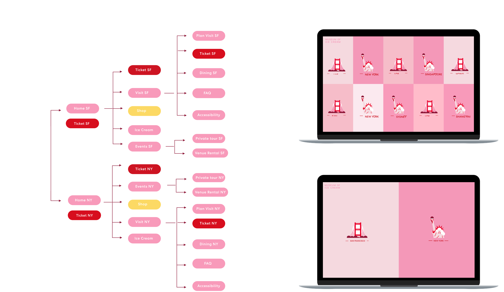
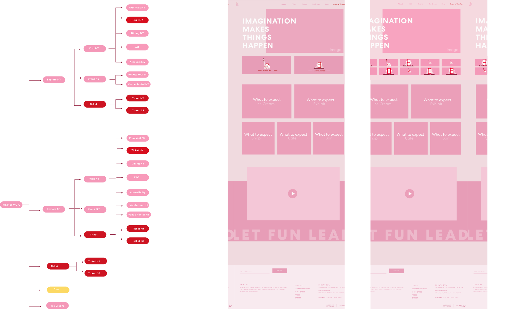
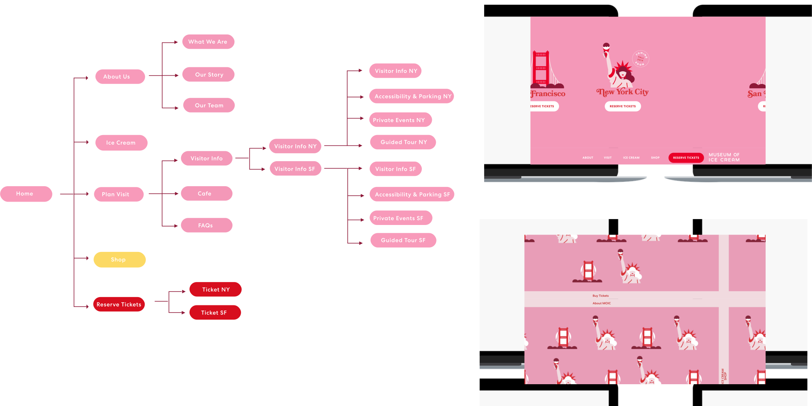
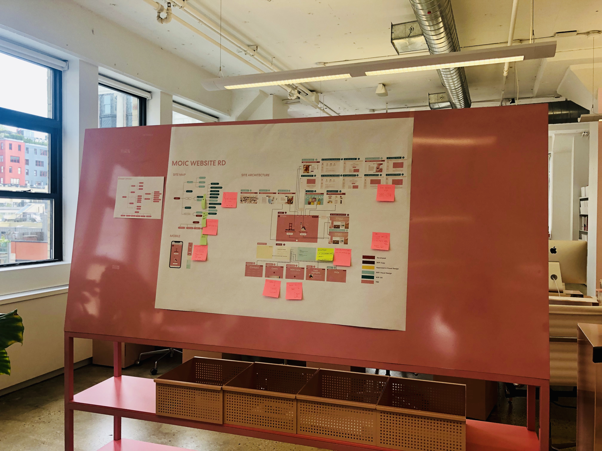
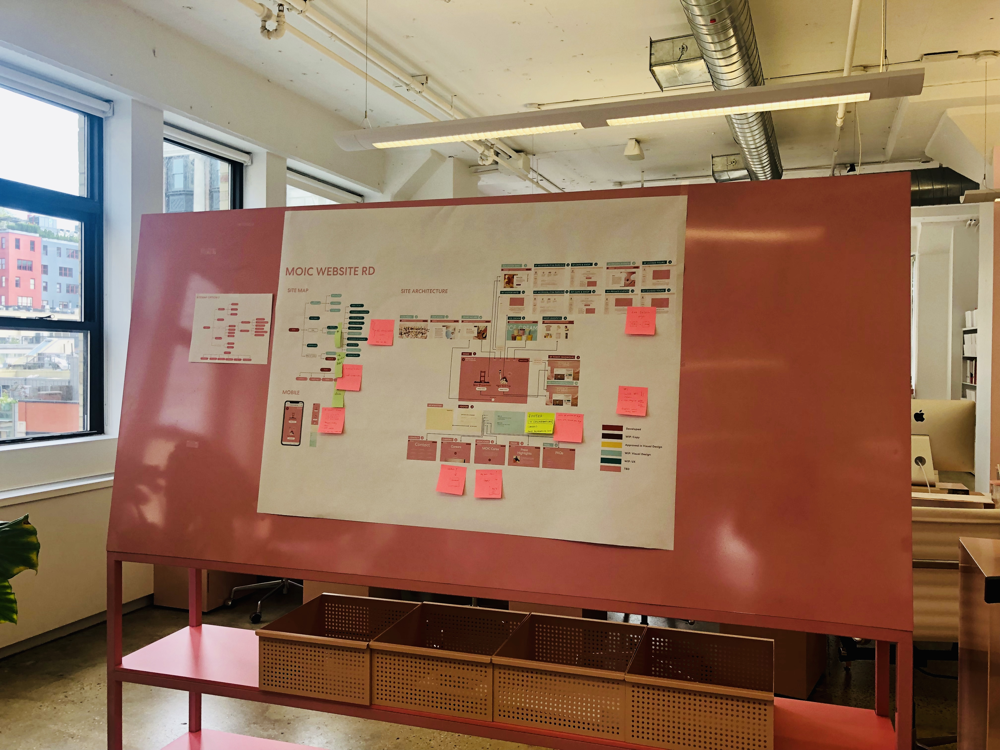

PROBLEM
Museum of Ice Cream, a Figure-8 brand, is an interactive art museum with ice cream and candy-themed installation. However, as the company has expanded nationally and more venues have been built, its website has started to confuse many guests for several reasons.
1. Redundant and Repeated Content
2. Messy Site Architecture
3. No Clear Distinction Between Venues (Guests complain about buying wrong tickets)
GOAL
1. To simplify the UX architecture
2. To migrate vendor sites seamlessly
3. To differentiate among venues clearly
4. To insure mobile responsivity
DESIGN PROCESS
USER RESEARCH
User: young people aging from 20-40, especially females.
Survey:In order to understand the reason of visiting the website, a survey was conducted to MOIC community through Instagram
Persona: The following two personas are based on interviews and surveys.

HIERARCHY OF NEED
After the research and user interviews, brand team, marketing team and our team(Tech team) come up with the hierarchy of needs for the website.
1. Ticketing experience
2. Our Brand
3. E-commerce/Shop
4. Ice cream line
5. Others like MOIC partnership etc.
IDEATION
Three versions of landing page were created for design critic. All designs are based on the design principle(branding) and the hierarchy of need. The team finally pick the version three, that is, landing on a page with 10% of main navigation and 90% of location icons.
Version 1: Location Only
Barry Schwartz, a professor and author from Swarthmore College showed that too many options can lead to stress, anxiety, and discontent. Since no one gets happier with the maximum freedom of choice in this information-overloaded world, I try to limit the freedom of choice in this scheme. Users only need to have action: choosing the location.
Version 2: Small Location + Brand
In the second scheme, the location step becomes secondary. What is MOIC and What to expect in MOIC become the main content.Lots of information and buttons appear on the home page.
Version 3: Location + Menu
The last scheme is a neutral version of the first two. Only one step can guide the users to the about page of the company, to shop the merchandise as well as check the ice cream line, or to browse the specific information of different venues.
SITE ARCHITECTURE
After the team picked a design scheme, I updated the site architecture and created the second version of wireframe.
 
